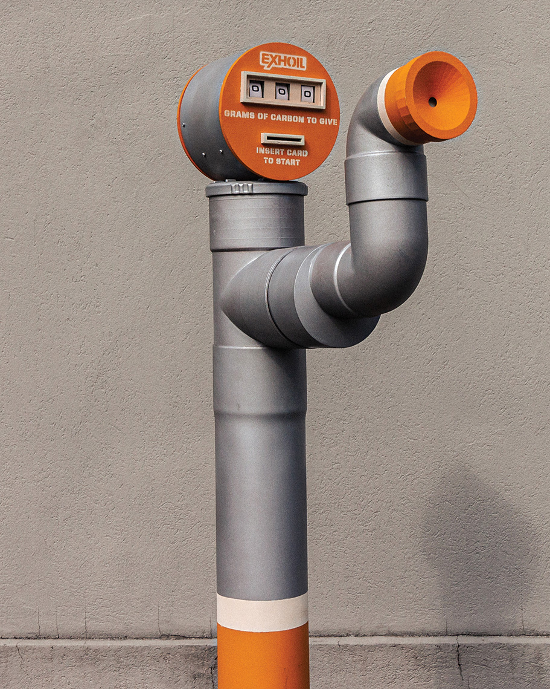
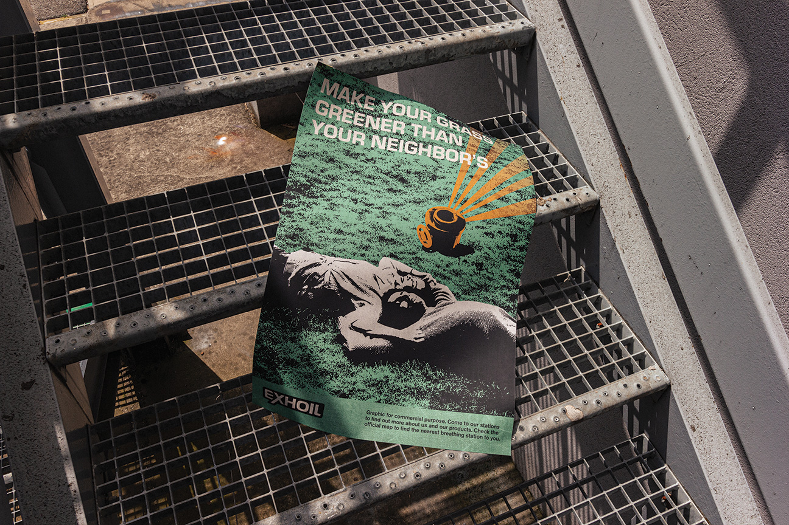
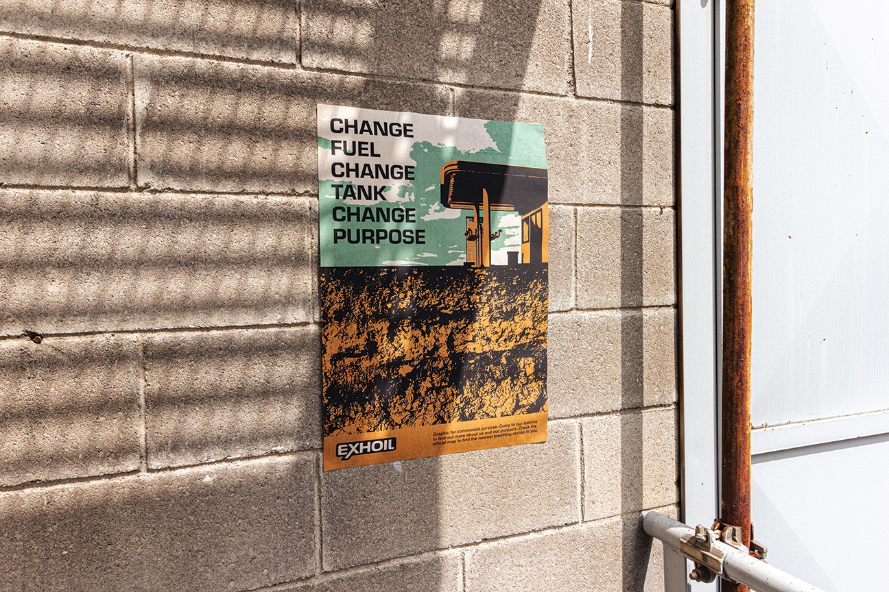
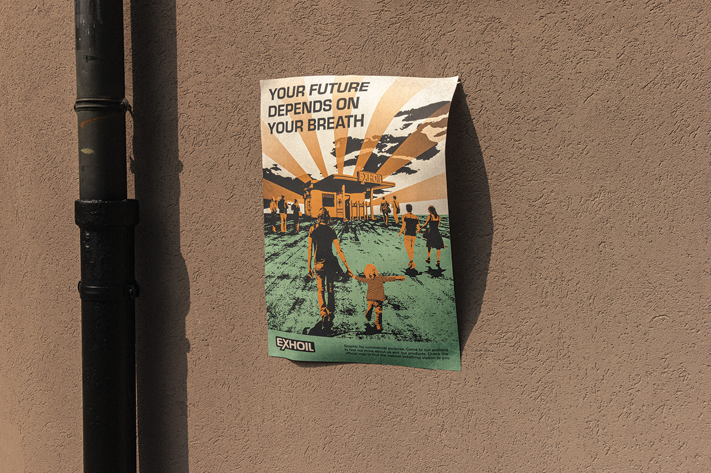
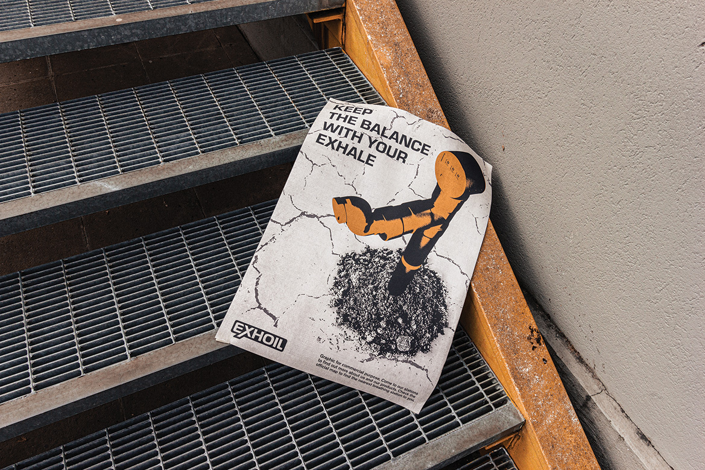
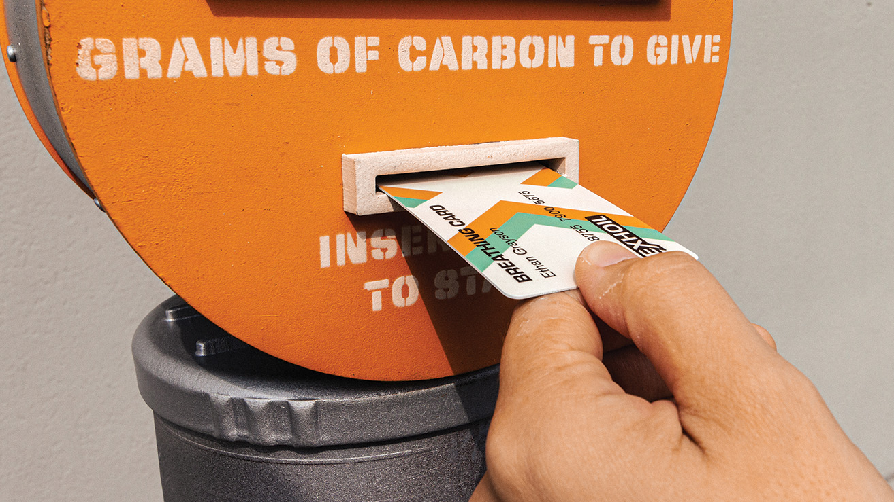
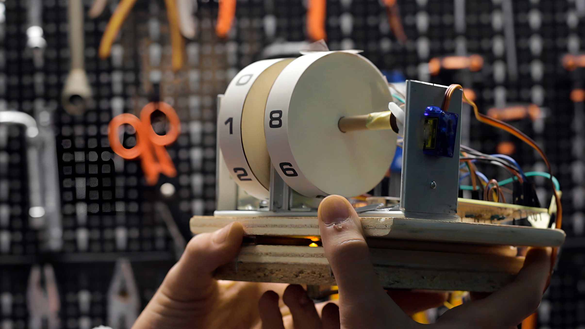
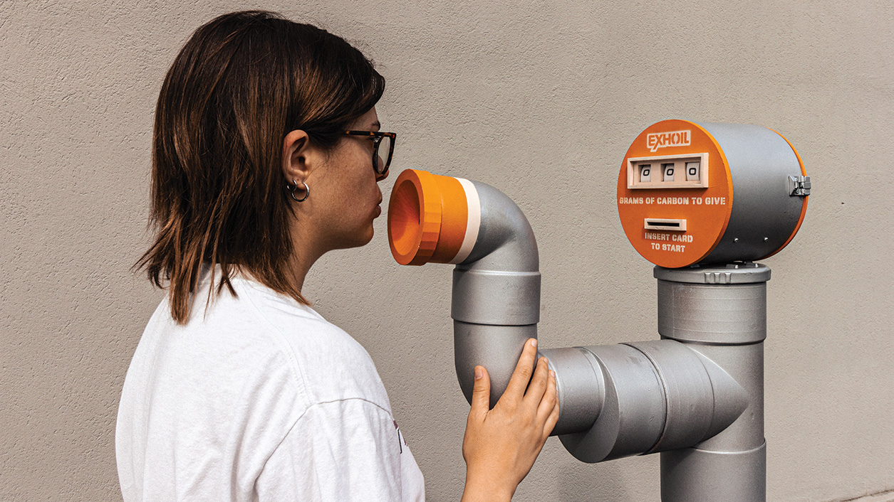

EXHOIL
2023
2023
Speculative design
Branding
Prototyping
Branding
Prototyping
Scenario
In 2050, Exhoil, once a major resource extractor, faces the reality of
soil death caused by urbanization, deforestation, and unsustainable
farming. The soil, no longer able to absorb carbon or support life, is
declared dead, marking the collapse of vital ecosystems. In response,
Exhoil shifts its focus from taking resources to giving back.


Exhoil introduces soil-breathing columns at its stations, replacing
gasoline pumps. These columns convert carbon dioxide from human
breath into carbon that nourishes the soil, creating a form of
artificial respiration. Humanity is now viewed as a resource,
actively helping to restore the soil.
Speculative provocation
This project envisions a future where humans play a key role in
reviving the planet. Exhoil's innovative system highlights a shift
toward sustainability, where human actions are essential to reversing
environmental damage and rebuilding ecosystems.




Visual identity and advertising
The creation of the brand and its visual image was inspired by the
aesthetics of American oil companies and petrol stations of the 1950s
and 1960s. The name of the former oil company Exhoil comes from the
union of the words ‘exhale’ and ‘soil’, a reference to the company's
new values and mission.

The breathing column prototype is activated when a personal card is
inserted, triggering a photoresistor that signals the Arduino to
generate the carbon count on the display. Breathing into the nozzle
moves a membrane, which reduces the carbon count by one unit with each
breath.


Team
Chiara Compagnoni / Clara Di Bella / Francesco Scarfone / Matteo Semeraro / Costanza Turi / Beatrice Tronconi